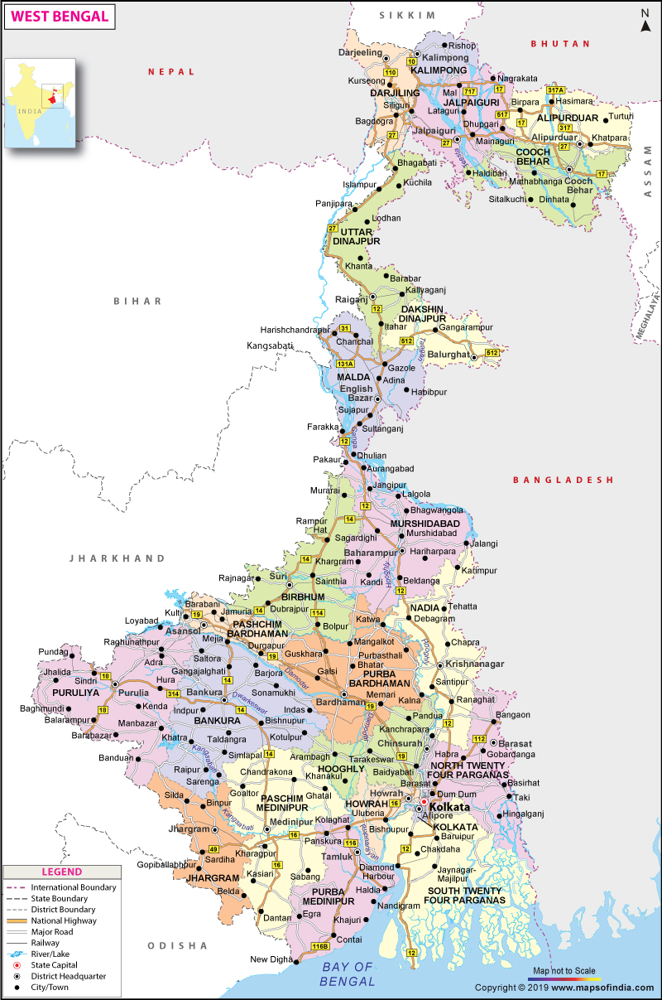
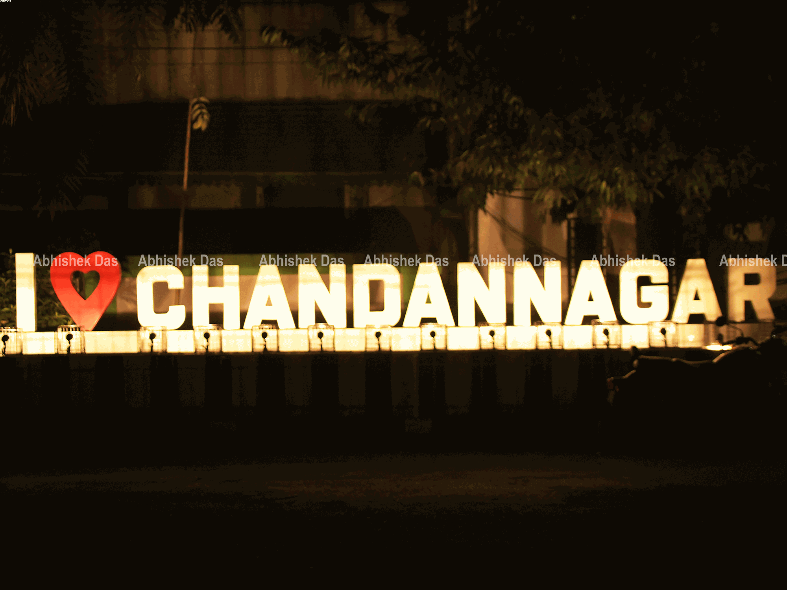
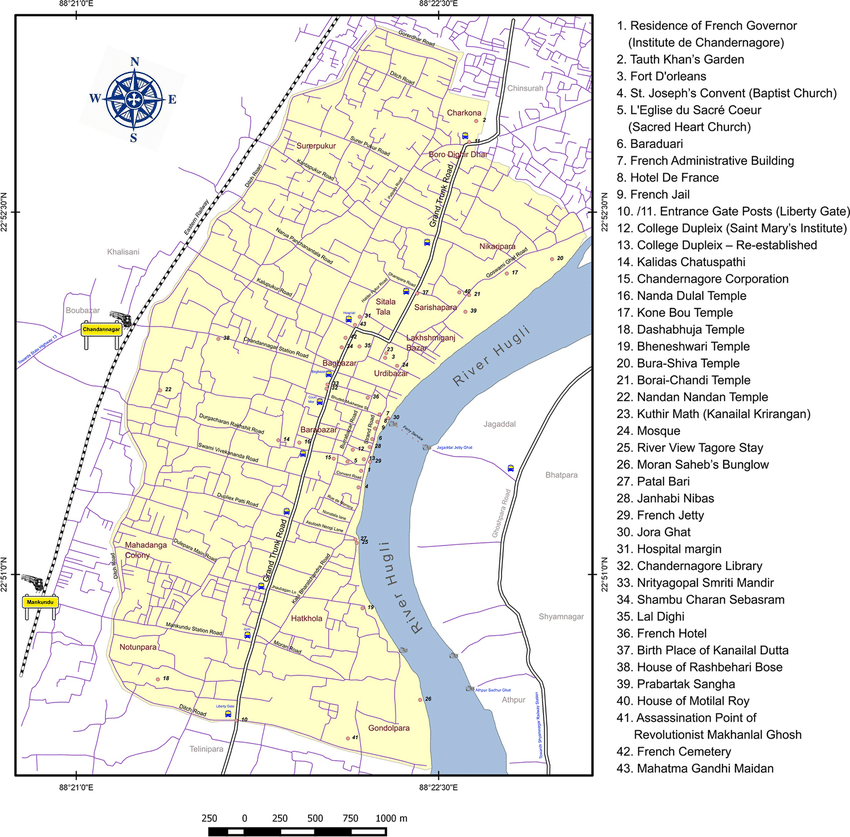

Chandannagar a suburban city in India located in the district of Hooghly
Previously Chandannagar was a French colony and known as "Chandernagore"
Chandannagar is located in the district of Hooghly

Chandannagar (pronounced [tʃɔnd̪ɔn.nɔɡoɾ]; French: Chandernagor, pronounced [ʃɑ̃dɛʁ.nagɔʁ]), also known by its former names Chandernagore and Chandernagor, is a city in the Hooghly district in the Indian state of West Bengal. It is headquarter of the Chandannagore subdivision and is part of the area covered by the Kolkata Metropolitan Development Authority (KMDA).
Located on the western bank of Hooghly River, the city was one of the five settlements of French India. Indo-French architecture is seen in the colonial bungalows, most of which are in a dilapidated state.[1]

Some of the major attractions of Chandannagar are :-

C + O2 → CO2